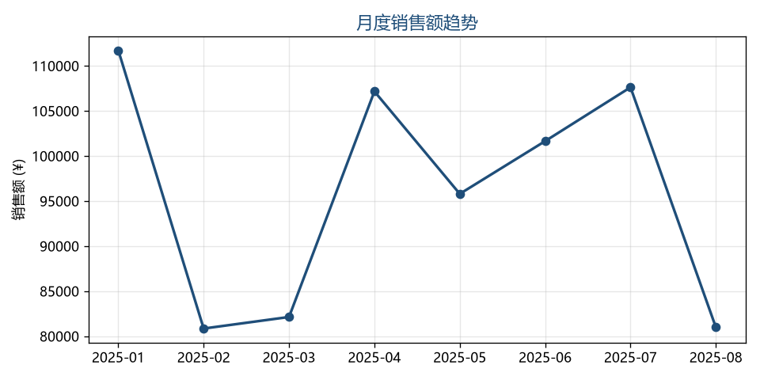

熊 旭
数据分析 / 数据运营实习生 · 数据作品集
业务问题：从电商订单中识别销售趋势、品类与区域表现，定位可优化的运营方向。

交付物：原始脏数据 → 清洗后数据 → 分析脚本(Python/R) → 图表 + 结论 → SQLite 数据库(orders_clean, 533 行)
① 把示例数据换成真实 Kaggle 电商数据集，重跑脚本并改写结论。
② 新增项目 02（楚超科研 / 武汉公开数据 / 家乡旅游，待定）。
③ 推送 GitHub，绑定简历「作品集」占位链接，开启 GitHub Pages 展示本页。